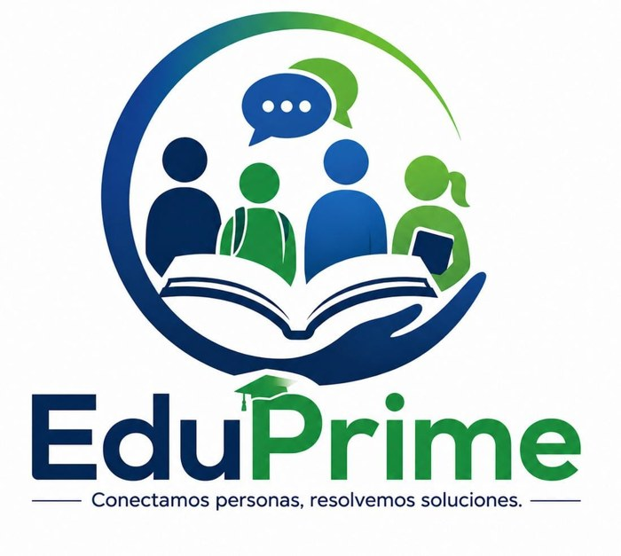

Lo que hacemos
Brindar una atención de calidad a toda la comunidad escolar, ofreciendo soluciones oportunas, eficientes y accesibles que ayuden con las necesidades de estudiantes, docentes, familias y demás integrantes de la institución.
EduPrime es una empresa dedicada a brindar atención, orientación y apoyo a estudiantes, padres de familia, docentes y personal administrativo. Su objetivo es resolver dudas, gestionar solicitudes y ofrecer un servicio amable, rápido y eficiente para mejorar la experiencia de toda la comunidad educativa.

Brindar una atención de calidad a toda la comunidad escolar, ofreciendo soluciones oportunas, eficientes y accesibles que ayuden con las necesidades de estudiantes, docentes, familias y demás integrantes de la institución.
Ser una empresa reconocida y destacada por brindar un excelente servicio a la comunidad escolar, caracterizándonos por nuestra calidad, responsabilidad, eficiencia y compromiso con los usuarios.
Seis principios que están presentes en cada servicio que prestamos.
Trato digno a cada persona.
Cumplimos lo que prometemos.
Relaciones sólidas con la comunidad.
Tecnología para atender mejor.
Con el bienestar escolar.
Servicio eficiente y oportuno.
Brindar un servicio integral, eficiente y de calidad a la comunidad educativa, ofreciendo soluciones oportunas a sus necesidades y fortaleciendo la comunicación entre estudiantes, docentes, familias e instituciones, mediante una atención basada en el respeto, la responsabilidad, la innovación y el compromiso con el bienestar escolar.
Ocho metas concretas que orientan nuestro trabajo diario.
Ofrecer atención rápida y eficiente a los diferentes integrantes de la comunidad educativa, buscando responder de manera oportuna a sus necesidades e inquietudes.
Fortalecer la comunicación entre estudiantes, docentes, familias y la institución, utilizando herramientas y estrategias que permitan transmitir información de manera clara, organizada y accesible.
Brindar soluciones efectivas a las diferentes situaciones y necesidades que puedan presentarse dentro de la comunidad escolar, procurando siempre una atención responsable y respetuosa.
Promover el respeto, la responsabilidad y la confianza como valores fundamentales en cada servicio y proceso realizado por EduPrime.
Implementar herramientas tecnológicas e innovadoras que permitan mejorar la atención, facilitar los procesos y ofrecer una experiencia más sencilla y eficiente a los usuarios.
Contribuir al bienestar de la comunidad educativa, creando servicios que favorezcan un ambiente escolar organizado, colaborativo y positivo.
Mejorar continuamente la calidad del servicio, teniendo en cuenta las opiniones, necesidades y sugerencias de los usuarios para identificar oportunidades de mejora.
Construir una relación de confianza con las instituciones educativas, ofreciendo un servicio comprometido, organizado y orientado a generar resultados positivos para toda la comunidad escolar.
Conoce a las personas que están detrás de EduPrime o escríbenos tu consulta.